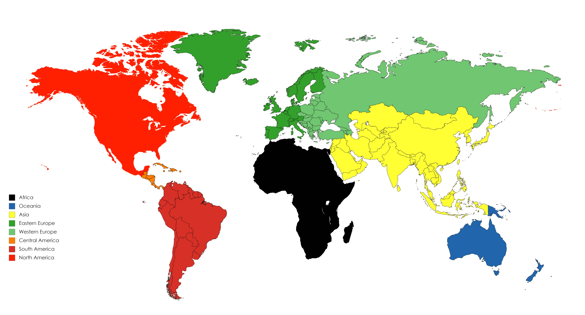

Le but de ce site est d'étudier l'évolution de la mortalité routière dans le temps dans le monde.
Notre jeu de données a été collecté par l’OMS (Organisation Mondiale de la Santé) et présente l'évolution de la proportion par habitants de décès dus aux accidents de la route par tranche d'age pour 69 pays entre 1970 et 2008. Pour obtenir le nombre total de morts, et pour étudier leur relation avec le PIB par pays, nous avons utilisé des données issues de la banque mondiale.
Les questions qui nous ont intéressées sont:
Quels est l'efficacité des lois et des avancées technologiques pour diminuer la mortalité routière?
Quelles sont les inégalités entre les pays face à la mortalité routière?
La circulation sur les routes publiques est une problématique antérieure à l'invention de l'automobile. Dès 1804 Napoléon instaure la circulation obligatoire sur la droite de la chaussée et en 1854 apparaissent les prémices de la police routièr actuelle avec la création de la police du roulage et des messageries publiques. Mais ce n'est qu'à partir du début du 20ème siècle que les premières règles routières interviennent comme l'unification du code de la route en 1921 ou l'apparition de la ceinture de sécurité au début des années 70, ce sont ces règles qui, couplées avec les inovations téchniques sur les véhicules et sur les routes ont permis de faire décroitre la mortalité entre 1970 et 2008 Toutefois les accidents de la route restent la première cause de décès chez les 15-29 ans.
On observe un léger décallage entre l'édiction des lois et la chute de la mortalité sur la route, dû à l'écart de 1 à trois ans entre l'édiction d'une loi, sa mise en place et son application par les citoyen.
Contrairement à la législation, les avancées technologiques ont un impact plus lent sur la mortalité. En effet, il faut attendre le renouvellement progressif du parc automobile national pour que ces avancées soient effectives.
Même s'il n'y a pas de lien direct entre la mortalité sur la route et le PIB par habitant d'un pays, comme en témoigne la faible mortalité sur les routes d'un pays comme l'Uruguay, il reste un bon indicateur de la capacité d'un pays à moderniser ses infrastructures. En l'occurence on observe un réel écart à partir de 15 000 $USD par habitant, seuil à partir duquel la mortalité chute brutalement.
